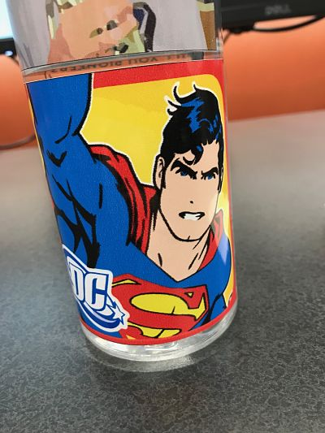
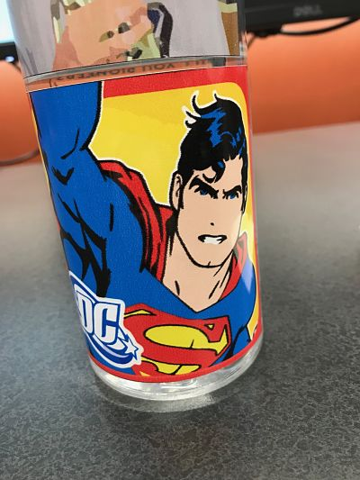
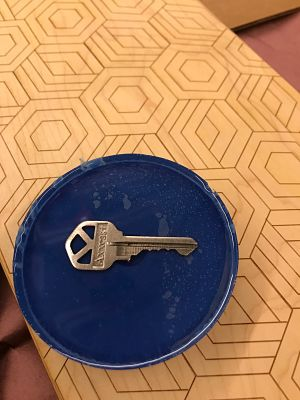
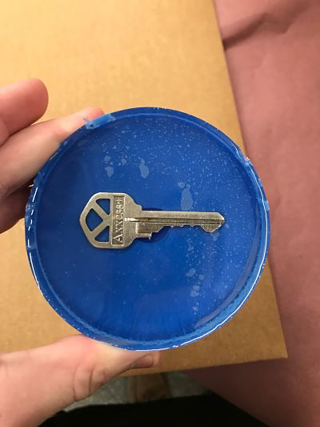

Home
Rotation 6
Sticker/Vinyl Printing
One project I did with vinyl cutting was making single color stickers. These sticks are shapes that are cut by a Roland GS-24 on a single color piece of vinyl that is sticky on one side. I made
each sticker by choosing an image online. Each image that I found was a simple shape that could be cut and then peeled off without damageing the sticker. I put each image side by side in a CorelDraw
document. I saved it to a flash drive and went to the computer by the printer where I outlined it as a logo, ungrouped it, then I clicked the R icon to cut it. The most challenging part of the process
was remembering the small steps after placing the images in the CorelDraw document.
I chose the stickers I did because I like baseball, and more specifically the Indians thus the "C") and I like the ocean so I made an anchor.


I went through a similar process for color stickers. I found an image and made it the dimensions that I wanted. Then, I outlined it with the Roland pink contour line and printed them both.
 

After the stickers, I moved on to making a coaster out of urethane and epoxy. The bottom of the coaster was made out of urethane. The top was made out of epoxy, and in between I put a key. The first step
was to mix materials to get the urethane mixture. I then added blue dye while stirring. Using a slow and high pour, I slowly drizzled the material out of a paper cup and into a wider, plastic one. The next
was to create the top layer. After the bottom had set for 24 hours, I made another mixture. After hot gluing my key to the bottom layer, I poured the epoxy mixture into the cup as well. I used a popsicle
stick to move the bubbles that were fromed to the side. I let the top layer set for 24 hours as well. The final project is shown below.
